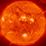
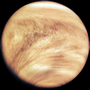
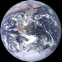
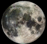
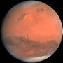
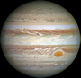
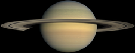
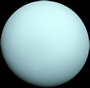
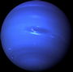
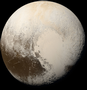

Трёхмерная модель Солнечной системы
Модель Солнечной системы с астероидами главного пояса (между орбитами Марса и Юпитера) и пояса Койпера (за орбитой Нептуна), а также тремя транснептуновыми объектами: Эридой, Макемаке и Хаумеа. Диаметр планет — условный. Надписаны первые 30 астероидов главного пояса и Хирон (2060).
СОЛНЦЕ
— единственная звезда Солнечной системы, жёлтый карлик. На Солнце приходится 99,86% массы Солнечной
системы. Внутри Солнца может поместиться более миллиона Земель. Солнце — почти идеальная сфера. Разница его
полярного и экваториального диаметров составляет всего 10 км. Свет Солнца достигает Земли за
8 минут.
Физические сведения. Радиус — 695 000 км. Масса — 1,99e30 кг. Плотность — 1,41 г/см3. Звёздная величина — -26,0. Абсолютная звёздная величина — 4,71. Период вращения вокруг оси — 24,6 сут. Скорость освобождения — 580 км/с. Спектральный класс — G. Наклон экватора к эклиптике — 7°15'. Состав — H2, He.

МЕРКУРИЙ
— ближайшая к Солнцу планета. У него отсутствует атмосфера, что позволяет наблюдать его
поверхность напрямую. Температура колеблется от 426 °C на обращённой к Солнцу стороне до -173 °C
на ночной стороне.
Данные орбиты. Среднее расстояние от Солнца — 57 910 000 км. Период обращения — 87,97 сут. Наклонение к эклиптике — 7,00°. Эксцентриситет — 0,21. Синодический период обращения — 115,8775 сут.
Физические сведения. Экваториальный радиус — 2440 км. Масса — 3,30e23 кг. Плотность — 5,43 г/см3. Альбедо — 0,11. Звёздная величина — -1,9. Период вращения вокруг оси — 58,6 сут. Видимый диаметр — 4,7/12,8 сек дуги.
Дополнительные сведения. Сила тяжести — 0,378 г. Скорость освобождения — 4,25 км/с. Средняя орбитальная скорость — 47,87 км/с. Наклон экватора к орбите — 0°. Долгота восходящего узла — 48,35°. Долгота перигелия — 77,44°. Температура поверхности — 440 K. Давление — 0 атм. Магнитное поле — 2e-3…1e-2 Гс. Поток солнечной энергии (Земля = 1) — 4,61…10,61.
ВЕНЕРА
размером почти с Землю. Это вторая планета от Солнца. Её, как и Меркурий, никогда нельзя увидеть в
полночь. Венера покрыта плотным слоем облаков из серной кислоты. Средняя температура на её поверхности —
около 464 °C.
Данные орбиты. Среднее расстояние от Солнца — 108 200 000 км. Период обращения — 224,70 сут. Наклонение к эклиптике — 3,39°. Эксцентриситет — 0,01. Синодический период обращения — 583,9214 сут.
Физические сведения. Экваториальный радиус — 6052 км. Масса — 4,87e24 кг. Плотность — 5,24 г/см3. Альбедо — 0,65. Звёздная величина — -4,4. Период вращения вокруг оси — 243 сут (ретро). Видимый диаметр — 9,8/66,7 сек дуги.
Дополнительные сведения. Сила тяжести — 0,905 г. Скорость освобождения — 10,36 км/с. Средняя орбитальная скорость — 35,02 км/с. Наклон экватора к орбите — 177,36°. Долгота восходящего узла — 76,72°. Долгота перигелия — 131,56°. Температура поверхности — 730 K. Давление — 93 атм. Состав атмосферы — CO2, N2. Магнитное поле — < 3e-4 Гс. Поток солнечной энергии (Земля = 1) — 1,91.
ЗЕМЛЯ
— третья планета от Солнца. Самая плотная из планет. Около 75% поверхности Земли составляет
вода. Рекордно высокая температура (+58 °C) была зарегистрирована в Эль-Азизии (Ливия), а
рекордно низкая (-89,2 °C) — на станции Восток в Антарктиде.
Данные орбиты. Среднее расстояние от Солнца — 149 600 000 км. Период обращения — 365,26 сут. Наклонение к эклиптике — 0,00°. Эксцентриситет — 0,02.
Физические сведения. Экваториальный радиус — 6378 км. Масса — 5,97e24 кг. Плотность — 5,52 г/см3. Альбедо — 0,37. Период вращения вокруг оси — 0,99 сут.
Дополнительные сведения. Сила тяжести — 1,000 г. Скорость освобождения — 11,18 км/с. Средняя орбитальная скорость — 29,79 км/с. Наклон экватора к орбите — 23,45°. Сжатие — 0,00335. Долгота восходящего узла — 354,90°. Долгота перигелия — 102,83°. Температура поверхности — 287 K. Давление — 1 атм. Состав атмосферы — N2, O2, Ar. Магнитное поле — 0,3…0,6 Гс.
ЛУНА
— единственный естественный спутник Земли. Луна всегда обращена к Земле одной и той же
стороной. Луна удаляется от Земли (каждый год примерно на 3,8 см).
Физические сведения. Среднее расстояние до Земли — 384 400 км. Средний видимый диаметр — 31'5". Звёздная величина полной Луны — -12,5. Сидерический период — 27,32 сут. Синодический период — 29,53 сут. Средняя орбитальная скорость — 1,02 км/с. Наклонение орбиты к эклиптике — 5°09'. Эксцентриситет орбиты — 0,0549. Диаметр — 3476 км. Масса (Земля = 1) — 0,0123. Плотность (Земля = 1) — 0,60. Скорость освобождения — 2,4 км/с.
МАРС
— четвёртая планета от Солнца и первая, чья орбита лежит за орбитой Земли. Поэтому его можно
наблюдать всю ночь. Поверхностная температура Марса опускается с отметки около 20 °C на
экваторе днём до -85 °C ночью.
Данные орбиты. Среднее расстояние от Солнца — 227 940 000 км. Период обращения — 686,98 сут. Наклонение к эклиптике — 1,85°. Эксцентриситет — 0,09. Синодический период обращения — 779,9361 сут.
Физические сведения. Экваториальный радиус — 3397 км. Масса — 6,42e23 кг. Плотность — 3,93 г/см3. Альбедо — 0,15. Звёздная величина — -2,0. Период вращения вокруг оси — 1,03 сут. Видимый диаметр — 3,5/25,5 сек дуги.
Дополнительные сведения. Сила тяжести — 0,379 г. Скорость освобождения — 5,02 км/с. Средняя орбитальная скорость — 24,13 км/с. Наклон экватора к орбите — 25,19°. Сжатие — 0,00519. Долгота восходящего узла — 49,60°. Долгота перигелия — 335,99°. Температура поверхности — 218 K. Давление — 0,007 атм. Состав атмосферы — CO2, N2, Ar. Магнитное поле — 6e-4 Гс. Поток солнечной энергии (Земля = 1) — 0,43.
ЮПИТЕР
— самая большая планета Солнечной системы и следующий после Солнца, Луны и Венеры ярчайший
объект неба. Атмосфера Юпитера полностью состоит из облаков газа. Средняя температура атмосферы
планеты — около -108 °C.
Данные орбиты. Среднее расстояние от Солнца — 778 330 000 км. Период обращения — 4332,71 сут. Наклонение к эклиптике — 1,31°. Эксцентриситет — 0,05. Синодический период обращения — 398,884 сут.
Физические сведения. Экваториальный радиус — 71492 км. Масса — 1,90e27 кг. Плотность — 1,33 г/см3. Альбедо — 0,52. Звёздная величина — -2,7. Период вращения вокруг оси — 0,41 сут. Видимый диаметр — 31…50 сек дуги.
Дополнительные сведения. Сила тяжести — 2,529 г. Скорость освобождения — 59,56 км/с. Средняя орбитальная скорость — 13,06 км/с. Наклон экватора к орбите — 3,13°. Сжатие — 0,06481. Долгота восходящего узла — 100,47°. Долгота перигелия — 15,63°. Температура поверхности — 120 K. Состав атмосферы — H2, He. Магнитное поле — 4,3 Гс. Поток солнечной энергии (Земля = 1) — 3,7.
САТУРН,
подобно Юпитеру, полностью покрыт облаками. Наиболее заметным его элементом являются
кольца, которые, впрочем, невооружённым глазом не видны. Средняя температура атмосферы Сатурна —
примерно -139 °C.
Данные орбиты. Среднее расстояние от Солнца — 1 429 400 000 км. Период обращения — 10759,50 сут. Наклонение к эклиптике — 2,49°. Эксцентриситет — 0,06. Синодический период обращения — 378,092 сут.
Физические сведения. Экваториальный радиус — 60268 км. Масса — 5,68e26 кг. Плотность — 0,69 г/см3. Альбедо — 0,47. Звёздная величина — 0,7. Период вращения вокруг оси — 0,45 сут. Видимый диаметр — 15…21 сек дуги.
Дополнительные сведения. Сила тяжести — 1,066 г. Скорость освобождения — 35,49 км/с. Средняя орбитальная скорость — 6,80 км/с. Наклон экватора к орбите — 97,86°. Сжатие — 0,1076. Долгота восходящего узла — 113,71°. Долгота перигелия — 92,80°. Температура поверхности — 88 K. Состав атмосферы — H2, He. Магнитное поле — 0,21 Гс. Поток солнечной энергии (Земля = 1) — 1,1.
УРАН
необычен тем, что ось вращения планеты наклонена на 98° по отношению к оси его орбиты.
Диаметр Урана в 4 раза превышает диаметр Земли. Температура поверхности составляет
-218 °C. Невооружённым глазом Уран едва заметен.
Данные орбиты. Среднее расстояние от Солнца — 2 870 990 000 км. Период обращения — 30685,00 сут. Наклонение к эклиптике — 0,77°. Эксцентриситет — 0,05. Синодический период обращения — 369,656 сут.
Физические сведения. Экваториальный радиус — 25559 км. Масса — 8,68e25 кг. Плотность — 1,32 г/см3. Альбедо — 0,51. Звёздная величина — 5,5. Период вращения вокруг оси — 0,72 сут (ретро). Видимый диаметр — 3,4…4,1 сек дуги.
Дополнительные сведения. Сила тяжести — 0,903 г. Скорость освобождения — 21,30 км/с. Средняя орбитальная скорость — 6,80 км/с. Наклон экватора к орбите — 97,86°. Сжатие — 0,030. Долгота восходящего узла — 74,06°. Долгота перигелия — 176,29°. Температура поверхности — 59 K. Состав атмосферы — H2, He, CH4. Магнитное поле — 0,23 Гс. Поток солнечной энергии (Земля = 1) — 0,3.
НЕПТУН
был обнаружен по координатам, вычисленным ранее по отклонениям в движении Урана. С Земли он
виден как голубой диск, движущийся через созвездия со скоростью около 2° в год. Его можно увидеть в
бинокль.
Данные орбиты. Среднее расстояние от Солнца — 4 504 300 000 км. Период обращения — 60190,0 сут. Наклонение к эклиптике — 1,77°. Эксцентриситет — 0,01. Синодический период обращения — 367,487 сут.
Физические сведения. Экваториальный радиус — 24766 км. Масса — 1,02e26 кг. Плотность — 1,64 г/см3. Альбедо — 0,41. Звёздная величина — 7,8. Период вращения вокруг оси — 0,67 сут. Видимый диаметр — 2,4 сек дуги.
Дополнительные сведения. Сила тяжести — 1,096 г. Скорость освобождения — 23,50 км/с. Средняя орбитальная скорость — 5,44 км/с. Наклон экватора к орбите — 29,60°. Сжатие — 0,026. Долгота восходящего узла — 131,81°. Долгота перигелия — 1,95°. Температура поверхности — 48 K. Состав атмосферы — H2, He, CH4. Магнитное поле — 0,1…1 Гс. Поток солнечной энергии (Земля = 1) — 0,1.
ПЛУТОН
в 2006 г. Международным астрономическим союзом признан карликовой планетой.
Данные орбиты. Среднее расстояние от Солнца — 5 913 520 000 км. Период обращения — 90800 сут. Наклонение к эклиптике — 17,15°. Эксцентриситет — 0,25. Синодический период обращения — 366,74 сут.
Физические сведения. Экваториальный радиус — 1137 км. Масса — 1,27e22 кг. Плотность — 2,06 г/см3. Альбедо — 0,55. Звёздная величина — 13,6. Период вращения вокруг оси — 6,39 сут (ретро). Видимый диаметр — 0,2 сек дуги.
Дополнительные сведения. Сила тяжести — 0,069 г. Скорость освобождения — 1,22 км/с. Средняя орбитальная скорость — 4,74 км/с. Наклон экватора к орбите — 122,52°. Долгота восходящего узла — 110,42°. Долгота перигелия — 224,59°. Температура поверхности — 37 K. Давление — 1e-5 атм. Состав атмосферы — N2, CH4, CO.
Управление
- Вращение — кликнуть левой клавишей мыши и перетащить.
- Смещение — кликнуть правой клавишей мыши и перетащить.
- Приближение/Отдаление — скроллить или, зажав среднюю клавишу мыши, перетаскивать.
- Полноэкранный режим — F11.
- Увеличить скорость — →.
- Уменьшить скорость — ←.
- Старт/Пауза — Пробел.
Настройки
- Скорость — устанавливаемая ползунком прямая/обратная скорость симуляции.
- Старт/Пауза — включить/выключить симуляцию.
- Астероиды — включить/выключить показ астероидов.
- Млечный Путь — включить/выключить отображение картинки Млечного Пути.
- Слежение — выбрать объект для слежения.
- Начальная дата — установить дату начала симуляции.
- Скриншот — сделать снимок экрана (без надписей и элементов управления). На открывшемся в новой вкладке изображении щёлкните правой кнопкой мыши и сохраните его.
Источники
- Орбитальные элементы планет: HORIZONS (информационная система NASA).
- Орбитальные элементы астероидов: база данных JPL NASA.
- Орбитальные элементы транснептуновых объектов: база данных JPL NASA по малым телам.
- Изображение Млечного Пути: ESO-панорама.
- Изображения Солнца, Луны, планет: NASA/European Space Agency.